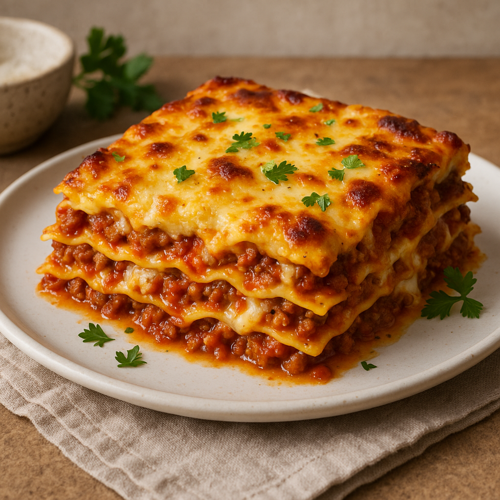

Dies ist ein Lasagnen-Rezept!
Zurück zur Startseite

Ein klassisches italienisches Ofengericht aus geschichteten Nudelplatten,
würziger Bolognese-Sauce, cremiger Béchamelsauce und geschmolzenem Käse –
goldbraun überbacken und voller mediterraner Aromen.
Zutaten:
- 9–12 Lasagneblätter (vorgekocht oder ohne Vorkochen, je nach Sorte)
- 2 EL Olivenöl
- Zwiebel, fein gehackt
- Knoblauchzehen, fein gehackt
- 500 g Rinderhackfleisch
- 2 EL Tomatenmark
- 800 g gehackte Tomaten (aus der Dose)
- 1 TL getrockneter Oregano
- Salz & Pfeffer nach Geschmack
- frisches Basilikum (optional)
Schritt für Schritt Anleitung:
- Olivenöl in einer Pfanne erhitzen.
- Zwiebel und Knoblauch glasig dünsten.
- hinzufügen und krümelig anbraten.
- Tomatenmark unterrühren und kurz mitrösten.
- Tomaten, Oregano, Salz & Pfeffer hinzufügen.
- Etwa 20–30 Minuten bei mittlerer Hitze köcheln lassen.
- Optional: Frisches Basilikum hinzufügen.